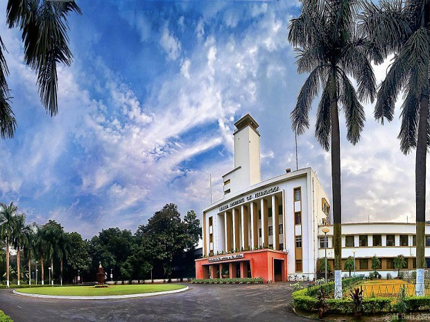
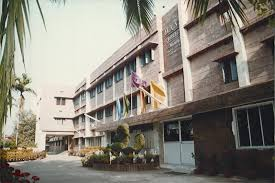
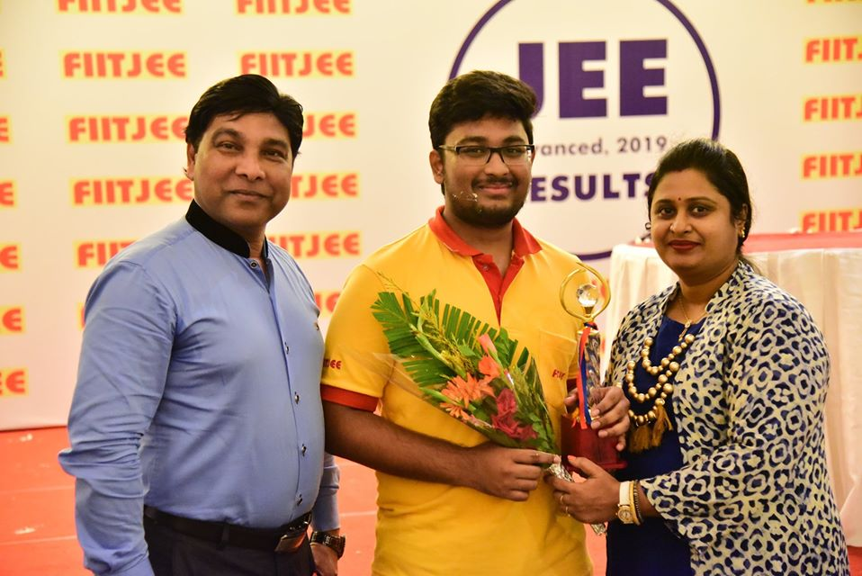

 This is Sohan Patnaik, native of Bhubaneswar, Odisha, India. I'm quite privileged to be pursuing my first year undergraduate studies at the Indian Institute of Technology, Kharagpur. I joined this premier institute with Mechanical as my core stream having immense fascination for exploring the infinity of computers. I endeavour to expand my knowledge in myriad areas including competitive programming, game developement, web developement, and the need of the hour i.e. machine learning. I aspire to build a career as a machine learning expert, to be specific, image processing.
That is the herald of the journey after I have got into IIT. Hope you will be interested to know the journey, yes, the so called strife to get into IIT.
 My school. Nah! My second home. I spent 14 years in D.A.V. Public School, Unit VIII, Bhubaneswar, starting from LKG to class XII. The journey was awesome and exciting too. I came across a lot of teachers who motivated me towards my goal and were quite supportive too. You know what, I came to know about intense competition in class IX when we had our sections changed, a section that had legends in my words. I struggled initially but could come out with flying colours eventually.
Every IIT-JEE aspirant undergoes rigorous training in a coaching institute. I too had one. I was enrolled to FIITJEE, Bhubeneswar in class VI and continued there till my success in class XII. FIITJEE also played a vital role in my success.
 From my point of view the greatest achievement for me was to get into a premier institute of the country, the IIT. But I have some other ones too.
I would like to mention my skills in programming
The terminals that I have used
Code editors
My projects section is under construction for I have just started making them. Presently I have only one game project - Snake Game, which you may go through my GitHub repository.